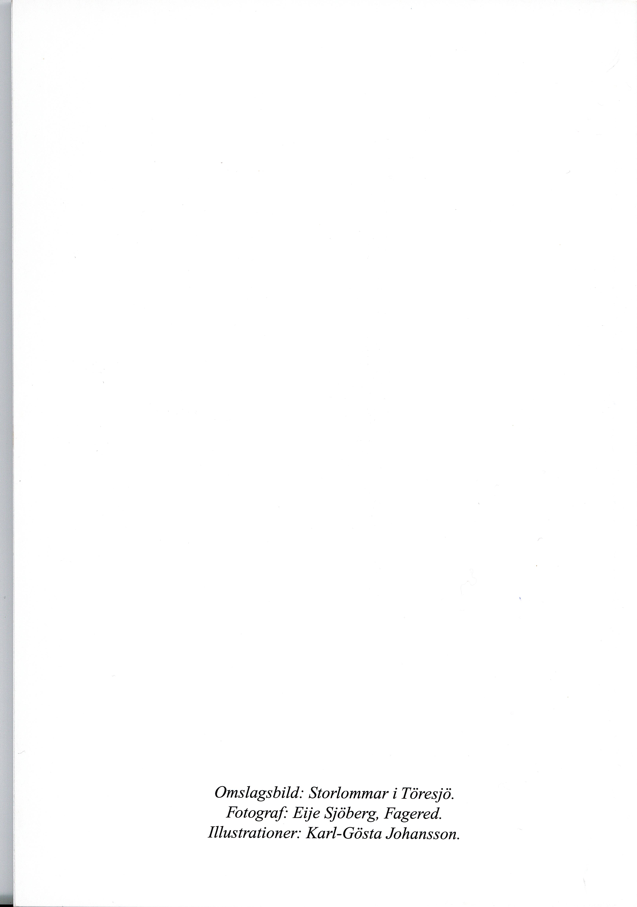
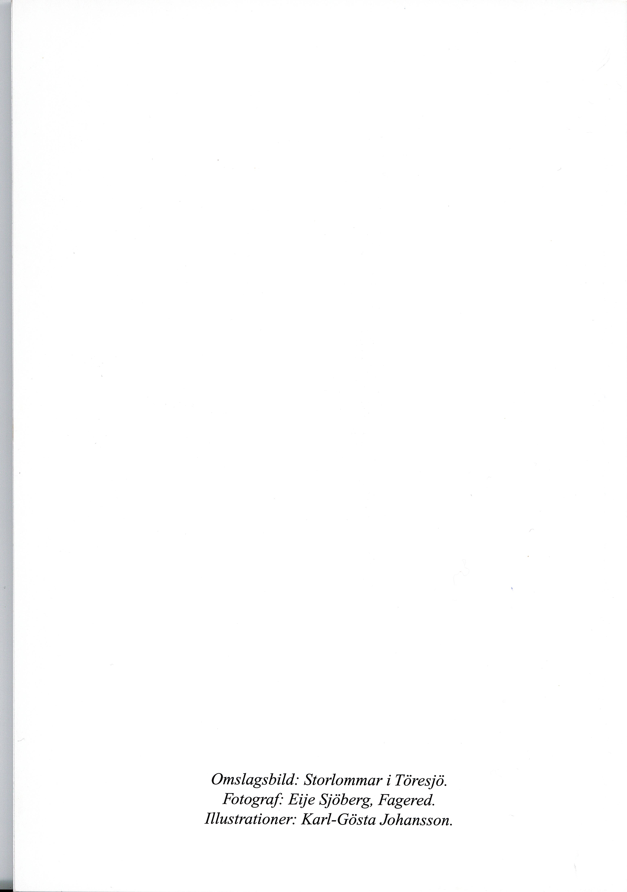
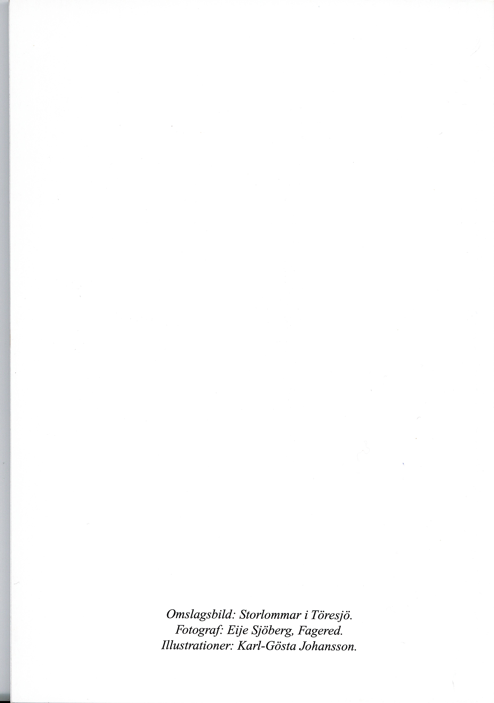
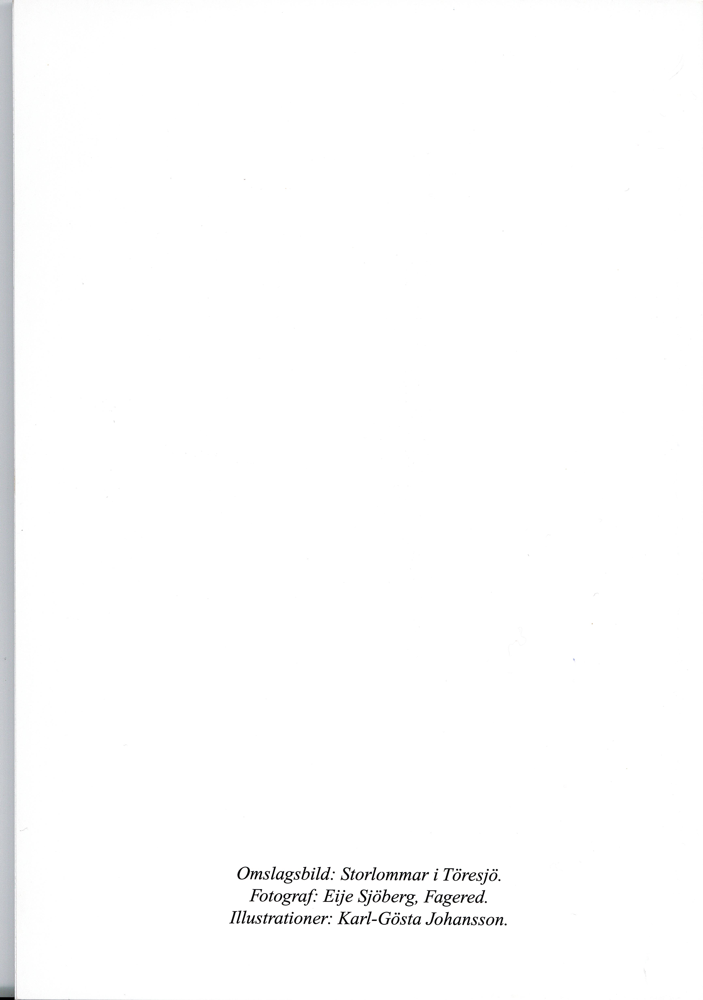

Om projektet:
Denna hemsida presenterar reslutatet av ett projektarbete i kursen Digitalisering för bevarande och tillgänglighet
på Högskolan i Borås vårterminen 2024. Inom ramen för denna kurs ombads vi hitta ett kulturhistoriskt objekt som vi kunde digitalisera
i samråd med en kulturinstitution. Vår handledare var Mats Dahlström och kursansvarig var Mikael Gunnarsson.
Vi valde att göra vår digitalisering på en dialekt. Detta innebar att vårt fokus låg på materialets innehåll snarare än på materialet i sig. Vår text är relativt nyskriven och gavs ut i december 2022, men dialekten den är skriven på är ett kulturhistoriskt fenomen som vi ansåg vara värt att bevara. Vid markup har vi lagt vikt vid de dialektala orden och även de ord och uttryck som direkt relaterar till det ämne som texten handlar om: slåtter.
Om dialekten och bygden:
Projektet bestod av översättning och transkription av en text skriven på ullaredska,
en lokal variant av halländska som i äldre dagar talades i Ullared med omnejd i Hallands län.
I översättningen fann vi stora likheter med både småländska, skånska och götska dialekter, en del modernare ord men även
uttryck och formuleringar som går att spåra till fornnordiska/fornsvenska. Det är med andra ord ett fantastiskt tidsdokument över hur
det talade språket har förändrats över mycket lång tid.
Byar i Hallands inland var länge relativt isolerade vilket utgjorde en perfekt grogrund för starka dialekter. Uttal kunde i vissa fall skilja sig från gård till gård. Som överallt är detta fenomen på väg att försvinna, vilket gör det så viktigt att bevara dessa dialekter när vi får möjlighet.
Den ursprungliga texten "Slötta i Hjärtare genom tiera" publicerades i december 2022 i en årlig krönika utgiven av den lokala föreningen Fagereds Pastorats Hembygdsförening. Vi har fått deras tillstånd att arbeta med texten, dock ville de inte att den publiceras online på sätt som påverkar deras inkomst från försäljning av krönikan.
Vid intresse för TEI-filer från projektet, vänligen kontakta kursansvarig Mikael Gunnarsson.
Vid intresse för orginaltexten, kontakta Fagereds Pastorats Hembygdsförening.
Författare:
Anneli Carlström, Clara Delding, Nina Leivo
Översättning och markup:
Anneli Carlström
Dokumentation och TEI:
Clara Delding
Bildhantering, OCR, markup och XSLT:
Nina Leivo